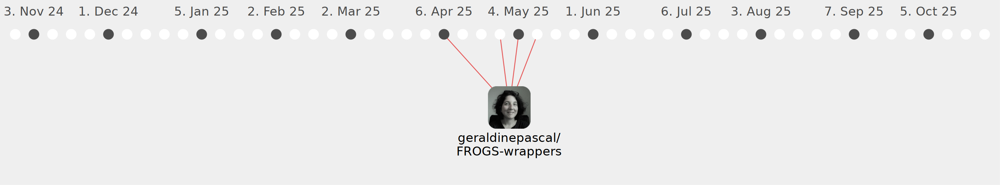

mariabernard

Commits all-time: 73
Commits last year: 60

(60)
- 4c1e147
- 3eb3740
- 6a12a2b
- d4abd1c
- 6195007
- 1580be6
- eef46aa
- 86ba4e5
- 39c4a28
- 3e827ee
- 4ebd941
- 60c1395
- 15ccf9f
- fb057b0
- b6afc35
- 3c26c33
- 3584ac7
- 01b92e7
- 3b09d18
- 7e21905
- d8676dd
- bd5e191
- a84c70b
- 3abe612
- 53dcce3
- 0b019b9
- 4121533
- cd5d79f
- 9f0d8a9
- b0373db
- 09d2c54
- 27a8106
- 607b00c
- 72e346b
- 327a107
- f681aa7
- 758970a
- 38f2ed7
- 70abd23
- aabb466
- c778ebd
- 86e59af
- 592aa2c
- 7722e01
- 4f2a40d
- a23384d
- 1154848
- 0e048f8
- e2b2c4e
- 908ab99
- 3da7641
- 94ed149
- 66e45e5
- 603520e
- b9057de
- ea81f0b
- 43d9450
- 5b27249
- 8517d61
- 78ca62b